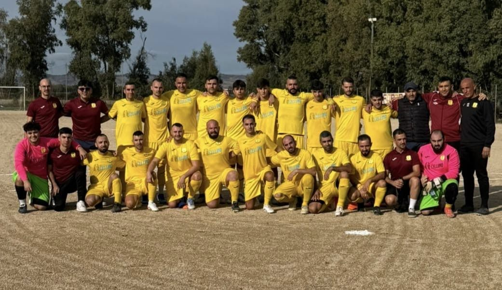
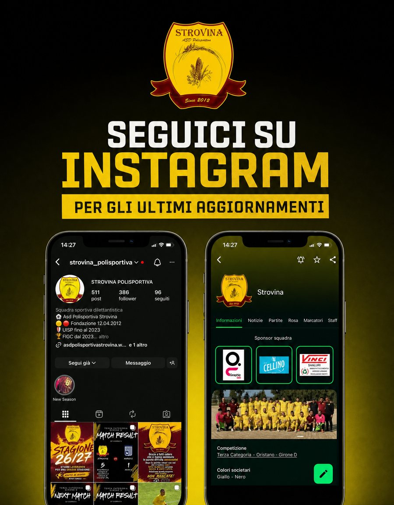
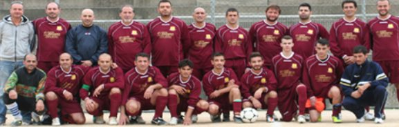
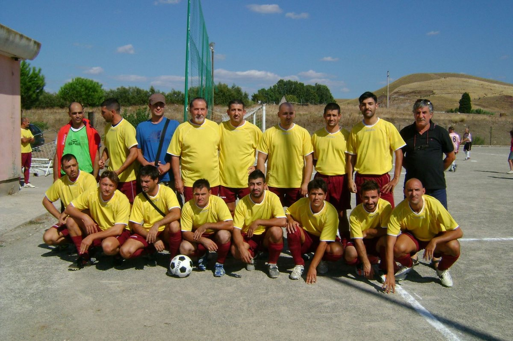
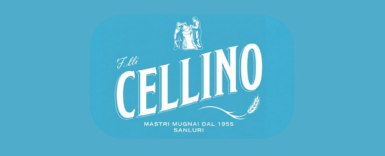
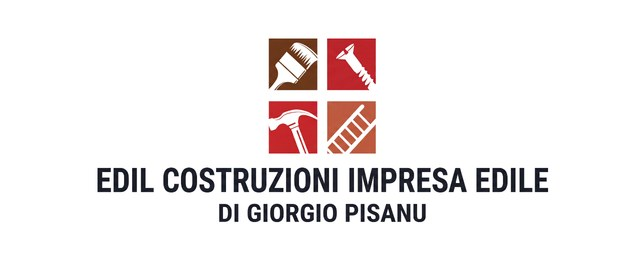
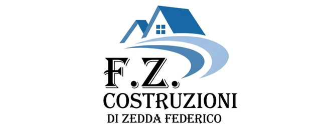
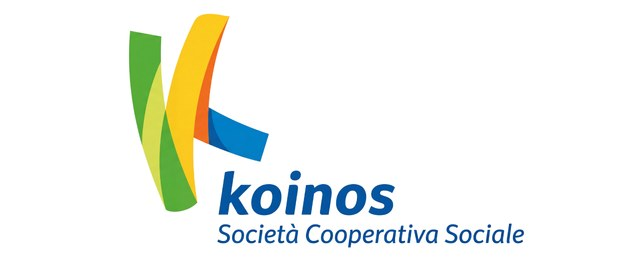

Prossima partita
VS
Da definire
⚽ Calendario in aggiornamento, segui i canali social per le prossime convocazioni.

A.S.D. Polisportiva Strovina, Sanluri Stato, Sardegna
Nati il 12 aprile 2012 da un'idea delle vecchie glorie del calcio staiese.
Oggi in Terza Categoria FIGC, con lo stesso spirito di sempre: lo sport che fa crescere una comunità.
Match center
Terza Categoria FIGC · Delegazione di Oristano, Girone D
⚽ Calendario in aggiornamento, segui i canali social per le prossime convocazioni.

Chi siamo
«Asd Polisportiva Strovina nasce il 12 aprile 2012 grazie ad un'idea di alcune vecchie glorie del calcio Staiese. La società si rivolge a tutti coloro che in maniera propositiva hanno voglia di incontrarsi e stare insieme e come in passato, grazie allo sport, far crescere nuovamente la comunità di Sanluri Stato.» La presentazione ufficiale della società
Dodici anni di tornei amatoriali UISP, poi il grande passo: nell'estate 2024 la Strovina si affilia alla FIGC e debutta in Terza Categoria. In rosa ci sono i ragazzi della frazione, di Sanluri e del circondario, tutte le generazioni, un'unica maglia.
Nel 2020, in piena emergenza Covid, la società scelse di rinunciare volontariamente al campionato per senso di responsabilità verso la comunità: una decisione apprezzata da tutti, che racconta bene che squadra è questa.


Il 12 aprile un gruppo di amici e "vecchie glorie" del calcio staiese fonda la Polisportiva Strovina.
Dodici stagioni nei tornei amatoriali UISP di Cagliari: il campo come punto d'incontro della frazione.
Rinuncia volontaria al campionato per l'emergenza Covid, a tutela della comunità. Intanto la società si rafforza con nuovi membri e nuova dirigenza.
In estate arriva l'affiliazione alla FIGC: la Strovina debutta in Terza Categoria, delegazione di Oristano.
Il pranzo sociale riunisce giocatori, dirigenti, famiglie, sponsor, vecchie glorie e tifosi. In campo, l'impresa: unica squadra a battere la capolista Oratorio Terralba.
Obiettivo dichiarato: migliorare il risultato della stagione precedente. E far crescere, partita dopo partita, la comunità di Sanluri Stato.
Identità
I simboli sullo stemma non sono decorazione: sono la storia di questa terra.
Sanluri Stato in sardo è "Stai", lo stagno. Su questa terra di bonifica la zanzara era di casa: oggi è il nostro simbolo più ironico e identitario, tanto da meritarsi una maglia da tempo libero tutta sua.
Il grano è la vocazione agricola di questa campagna. La spiga sullo stemma è il legame con chi questa terra la lavora da sempre.
I colori del grano maturo e della terra: giallo e amaranto, gli stessi dal 2012. Divisa gialla in casa, amaranto e nero nell'anima, e sul petto, sempre, "Stai 2012".
Sanluri Stato è la più popolosa delle frazioni di Sanluri, nel Medio Campidano: circa 789 abitanti, a 6 km dal paese. La sua storia moderna comincia nel 1928, con le prime case coloniche della bonifica e i coloni arrivati soprattutto da Veneto e Friuli, da qui i tanti cognomi veneti che ancora oggi si leggono nelle distinte di gara. Una comunità nata dal lavoro, che nel calcio ha trovato il suo punto di ritrovo.
La squadra
Ragazzi della frazione, di Sanluri e del circondario. Tutte le generazioni, un'unica maglia.
Presidente
Vice Presidente
Allenatore
Dirigente
Dirigente
Dirigente
Dirigente
Dirigente
Dirigente
Nomi, ruoli e numeri di maglia della stagione 2025-26 saranno pubblicati qui a breve. Nel frattempo, li trovi tutti in campo la domenica allo Strovina Stadium.
La nostra casa
Il campo in terra battuta di Borgo Strovina: essenziale, autentico, nostro.
Gallery
Le immagini dei match della stagione 2024-25. Foto: Ilaria C. e Roberto Arba.
Tutte le foto dei match sono sulla nostra pagina Facebook.
I nostri partner
Il materiale sportivo ufficiale della Polisportiva Strovina.




Legare il proprio nome alla squadra di Sanluri Stato significa investire nella comunità: visibilità sulle divise, sui canali social e qui sul sito.
Diventa sponsorContatti
Sede legale: Piazza Demontis snc, 09025 Sanluri (SU) · Campo di gioco: Strovina Stadium, Borgo Strovina, Strada I, Strovina